This page is being used by doctors, counselling and social work students, teachers, health & safety companies and many others to further their professional development.
Most of these books are also available as audible books on www.audible.com
The Power of Vulnerability - Brene Brown
VIDEO
Peter Gray - The End of Play: Why Kids Need Unstructured Time
VIDEO
Geri Puleo - Burnout and PTSD
VIDEO
Richard Lerner - What helps young people to succeed in life
VIDEO
Famous Failures
VIDEO
The new era of positive psychology | Martin Seligman
VIDEO
The Social Brain and the Workplace | Matthew Lieberman
VIDEO
How do you help a grieving friend?
VIDEO
iGen: The Smartphone Generation | Jean Twenge
VIDEO
Books and Further Reading
Rewire Your Anxious Brain:
How to Use the Neuroscience of Fear
to End Anxiety,Panic & Worry
by Catherine M. Pittman, PhD
& Elizabeth M. Karla, MLIS
Flow:
The Psychology of Optimal Experience
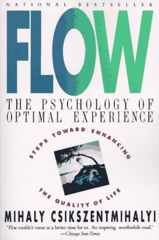
by Mihaly Csikszentmihalyi
Social:
Why Our Brains Are Wired to Connect
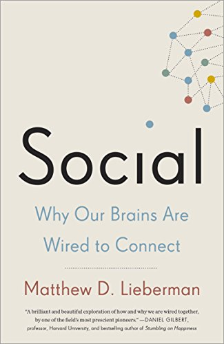
by Matthew D. Lieberman PhD
The Paradox of Choice:
Why More Is Less
by Barry Schwartz
Learned Optimism:
How to Change Your Mind and Your Life
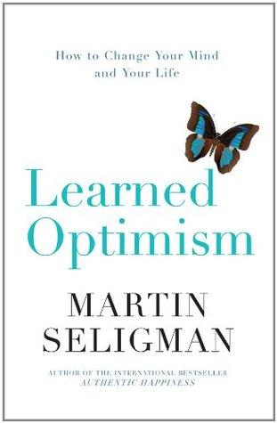
by Martin E. P. Seligman PhD
Daring Greatly:
How the Courage to Be Vulnerable
Transforms the Way We Live, Love,
Parent and Lead
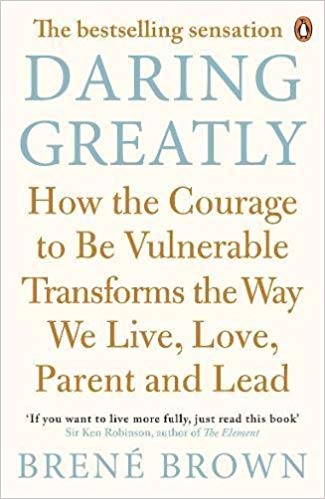
by Brene Brown
Flourish:
A Visionary New Understanding of Happiness and Well-being
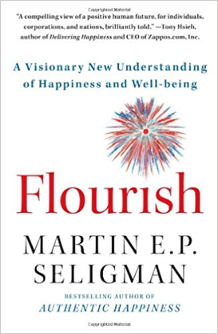
by Martin E. P. Seligman PhD
As We Forgive:
Stories of Reconciliation from Rwanda
by Catherine Claire Larson
Building Resilience in Children and Teens:
Giving Kids Roots and Wings
by Kenneth R. Ginsburg
Free to Learn:
Why Unleashing the Instinct to Play Will Make Our
Children Happier, More Self-Reliant, and Better
Students for Life
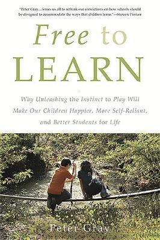
by Peter Gray
Mindsight:
The New Science of Personal Transformation
by Daniel J. Siegel, M.D.
The Case Against Homework:
How Homework Is Hurting Children and What
Parents Can Do About It
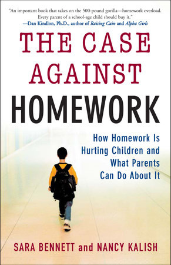
by Sarah Bennett and Nancy Kalish
Playful Parenting:
An Exciting New Approach To Raising
Children That Will Help You
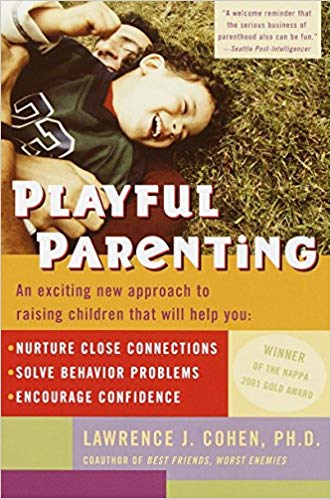
by Lawrence J. Cohen, PhD
The Brain That Changes Itself:
Stories of Personal Triumph from the
Frontiers of Brain Science
by Norman Doidge
The Nature Fix:
Why Nature Makes Us Happier,
Healthier, and More Creative
by Florence Williams
The Optimists Telescope:
Thinking Ahead in a Reckless Age
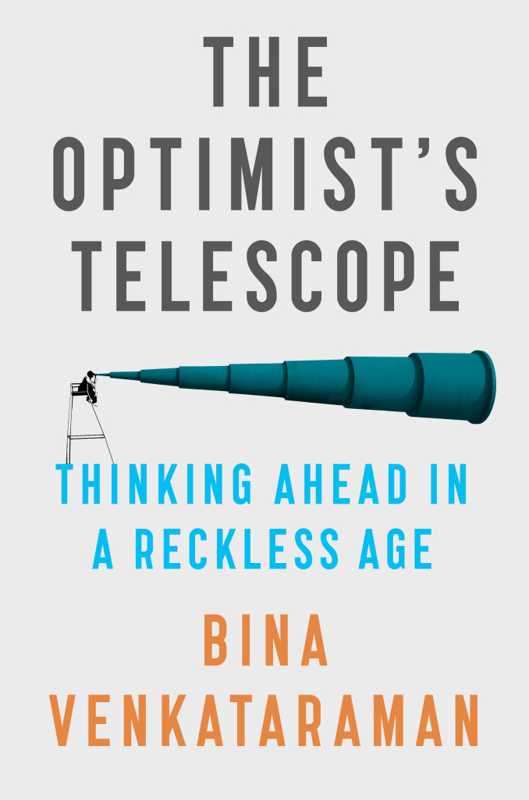
by Bina Venkataraman
The Coddling Of The American Mind:
How Good Intentions and Bad Ideas are
Setting up a Generation for Failure
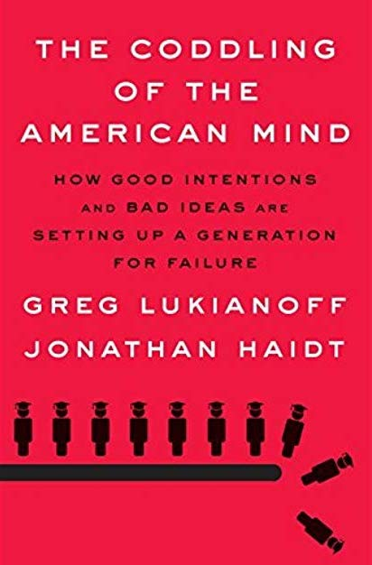
by Greg Lukianoff & Jonathan Haidt
Punished by Rewards:
The Trouble with Gold Stars, Incentive
Plans, A's, Praise, and Other Bribes
by Alfie Kohn
The Fine Art of Small Talk:
How to Start a Conversation in Any Situation
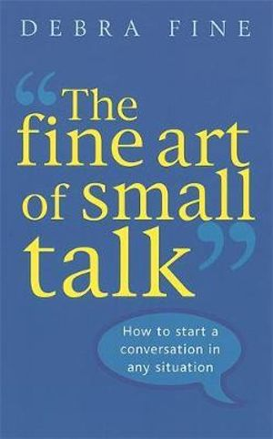
by Debra Fine
It's OK That You’re Not Ok:
Meeting Grief and Loss in a Culture That Doesn't Understand
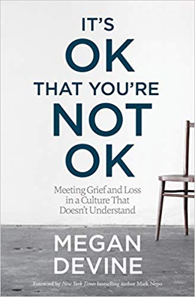
by Megan Devine
Please Be Patient, I’m Grieving:
How to Care For and Support a Grieving Heart
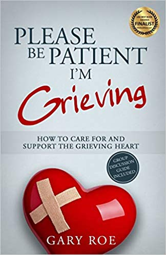
by Gary Roe
Blue Mind:
The Surpising Science That Shows
How Being Near, In, On or Under Water
Can Make You Happier, Healthier,
More Connected & Better at What You Do
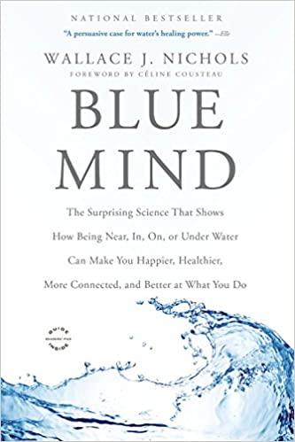
by Wallace J. Nichols
What the Nose Knows:
The Science of Scent in Everyday Life
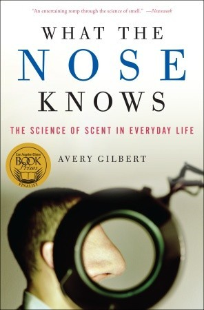
by Avery Gilbert
Anxious:
Using The Brain To Understand and Treat
Fear and Anxiety
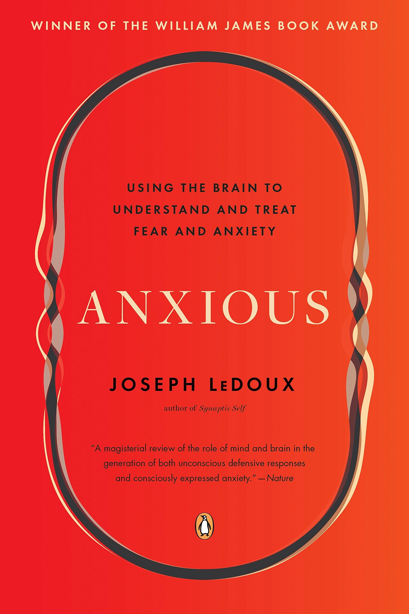
by Joseph LeDeoux
The Wisdom of Crowds
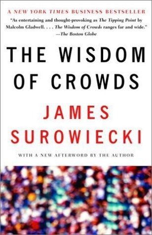
by James Surowiecki
Inventing Ourselves:
The Secret Life of the Teenage Brain
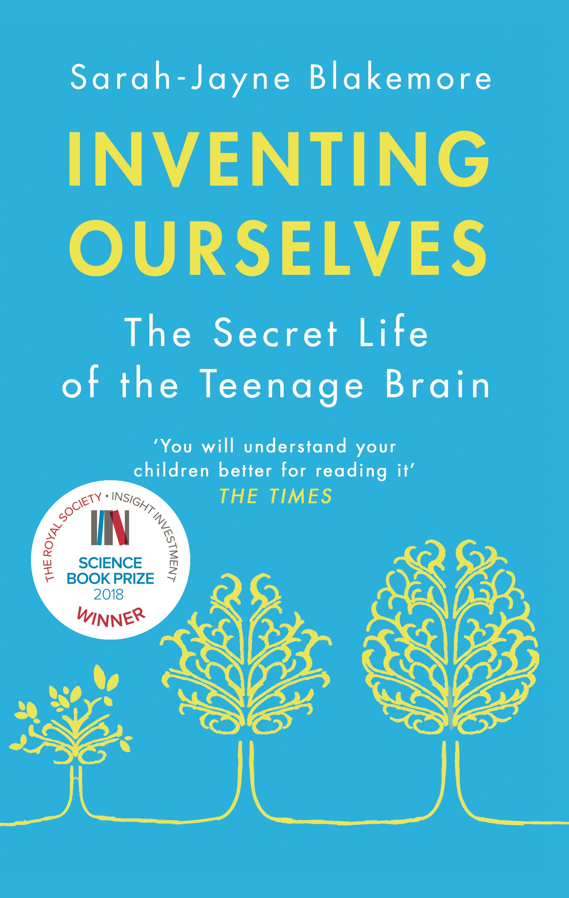
by Sarah-Jayne Blakemore